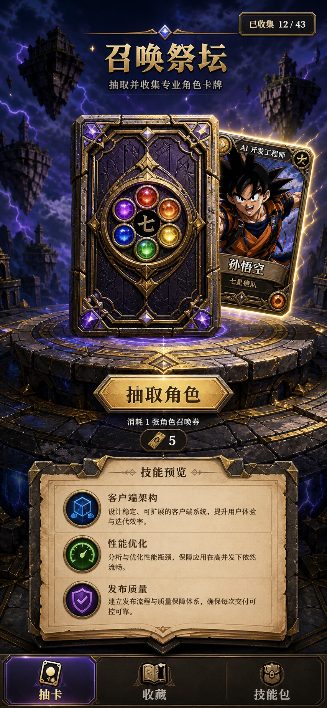
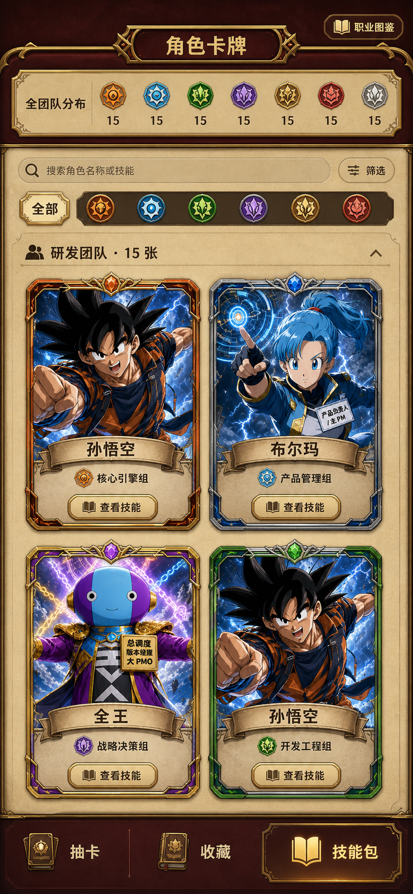
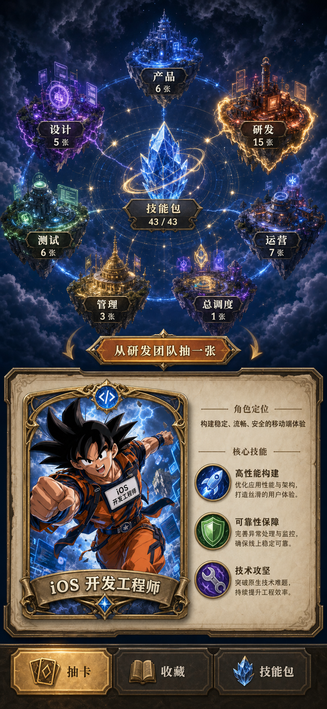

三套都保留“抽卡 / 收藏 / 技能包”，但第一屏的产品重心不同。点击一张即可选择。

把抽卡的仪式感放在第一位；翻牌后立刻展开岗位技能，最像“小游戏”。

直接展示卡牌库、团队筛选和技能入口；信息最清楚，也最接近炉石卡牌库。

用 7 个团队岛讲完整 APP 流水线；可选择团队定向抽卡，世界观最强。
我的建议：以 1 做抽卡首页、以 2 做技能包页，3 的团队星图只保留为技能包顶部总览。